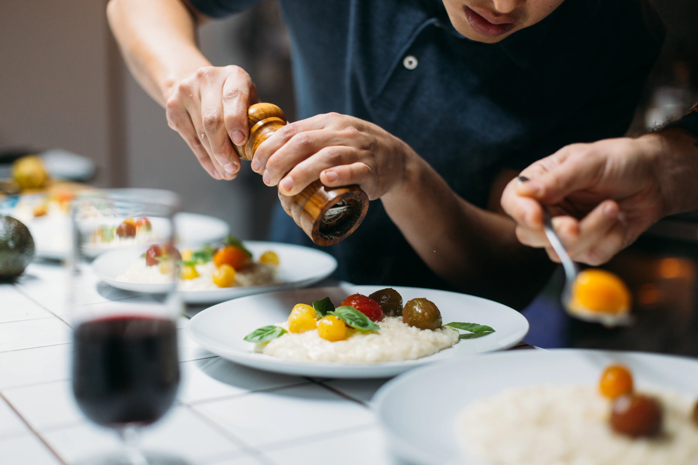

Private & Personal Chef
Imagine a dedicated chef arriving directly at your home, ready to cook and serve dishes that tell the story and flavors of Puglia. With the private chef service, you’ll experience an authentic journey into our culinary tradition.
Chef Claudio will guide you through a unique gastronomic experience, presenting seasonal menu ideas that you can customize to your liking. Every dish is prepared with fresh, local ingredients, allowing you to discover the true essence of Puglian cuisine in the comfort of your home.
Cooking Class
Discover the secrets of handmade Puglian pasta, fragrant taralli, rustic focaccia, and traditional pizza with our cooking classes. Using only local ingredients, we offer a convivial experience where you can immerse yourself in Puglian tradition.
Whether you choose a private or group class, you’ll learn to prepare the most iconic dishes of our cuisine, easily replicable at home to impress your loved ones. Let yourself be guided through an interactive and engaging experience, perfect for families, friends, or groups of enthusiasts, where food becomes the heart of the celebration.

Small Wedding, Food Delivery & Event
For intimate weddings or small celebrations, Chef Claudio brings the authenticity of Puglian cuisine directly to your event. From crafting personalized menus to delivering fresh, ready-to-enjoy dishes, we offer a tailor-made catering service perfect for any occasion.
Whether it’s a small wedding, an anniversary, or a private party, we ensure that every dish expresses the love for Puglian tradition and the excellence of our local ingredients.